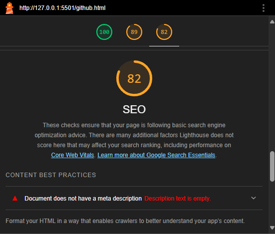
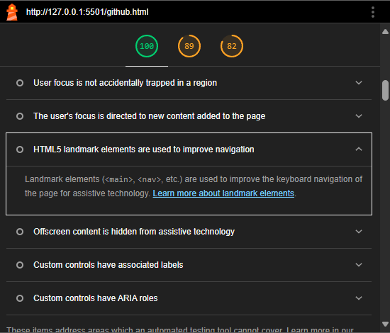

Accessibility
Universell utforming går ut på å lage en nettside som kan brukes av forskjellige mennesker. Hovedfokuset her er nemlig at nettsiden skal brukes av flest mulig folk, uansett hvem de er og hvilket apparat de bruker. Målet med universell utforming er at nettsiden skal være mest mulig brukervennlig, lett å bruke og forståelig. Vi har brukt universell utforming og laget en nettside som kan brukes på flere type skjermer, for å gjøre nettsiden mer tilgjengelig.
Automated test
Lighthouse er et verktøy vi brukte for å sjekke tilgjengeligheten av nettsiden vår. Vi brukte lighthouse for å teste våre nettsider, for å se hva som mangler og hva som kan forbedres. Med en automatisert test, fikk vi vite at strukturen var bra, og hvilke elementer som vi kunne bruke for å gjøre nettsiden mer tilgjengelig. Dessverre, så reagerte ikke lighthouse på noen få elemter, og derfor krevde tilbakemelding fra et menneske istenfor en automatisert test.
Valg av kode
Vi har brukt ulike semantic elements som «header», «footer» og «main» for å dele nettsiden i flere deler. Vi brukte elementer som «div», «article» og «section» for å dele innholdet i nettsiden. Nettsiden besto av mye innhold og for å style det brukte vi selectors som «class» og «#id» for å style spesifike deler av koden. Vi brukte selectors og inheritance for å style de spesifike delene i nettsiden, grunnet vi ville ha ulik fane størrelse på den ene delen, og ulik på den andre også.
Flere items
Vi har brukt en tabell på index siden, som lighthouse ikke kunne fortelle oss om. Vi har tatt i bruk av navigasjonsmeny og brukt ikoner som forklarer hva innholdet i menyen er, slik at det blir lettere for de som ikke kan forstå teksten å finne frem. Vi har brukt fargekontrast og dette kunne lighthouse ikke anbefale. Først brukte vi litt mørkere farge og dersom man gikk nedover i siden ble det lysere, men derimot på aktivitet siden har vi gjort bakgrunnen mørkere og skriften mer lysere. Lighthouse fortalte oss heller ikke om hvordan strukturen til en kode kunne være. Vi hoppe for eksempel fra «h1» til «h3». Vi bestemte hva slags innhold og struktur vi skulle ha på nettsiden. For å gjøre strukturen synligere har vi tatt i bruk tabell på nettsiden. For eksempel når vi ser på semesteroversikten, som er lag i en liten tabell.
Bilder fra lighthouse
Vi fikk 100 av 100 på accessibility, men det betyr ikke at vår nettside fungerer på alle nettlesere, på alle folk i verden, i alle miljøer. Dette er grunnen til at automatisert tester er ikke nok.

Når det kommer til best practice, så er det ikke mye vi kan gjøre uten en automatisert test.
Samme gjelder når det kommer til SEO
For å oppsummere, så hjelper automatiserte tester, men det finnes ting de ikke dekker, som device-compatibility og generell brukertilgjengelig design. Dette trenger man å teste manuelt.